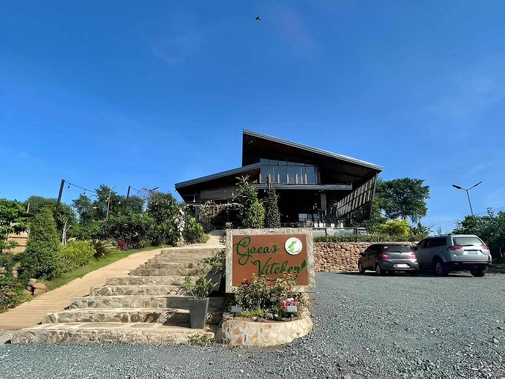

DESTINATION · CAFE
Brgy. Sampaloc, Tanay, Rizal
GAEA'S
A chill rodeside cafe on J.P. Rizal St. where you can take a break from the ride and enjoy coffee with a classic Tanay town vibe.
BACK TO DESTINATIONSLOCATION MAP · GAEA'S
OPEN IN MAPS ↗